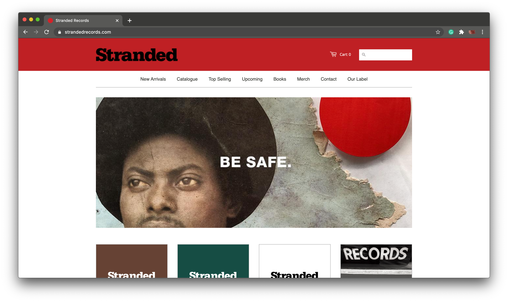
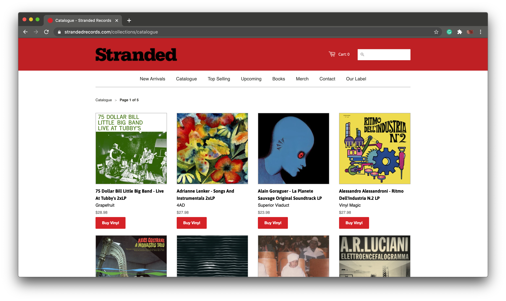
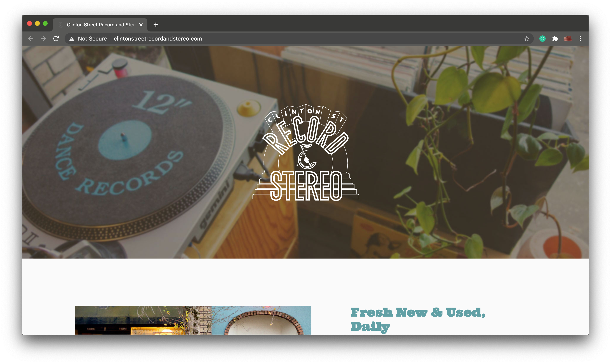
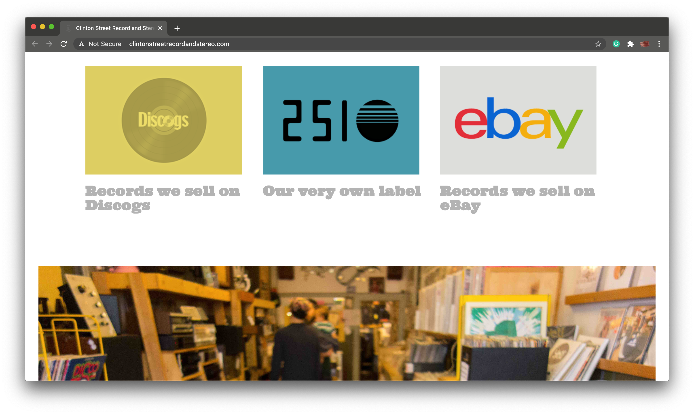
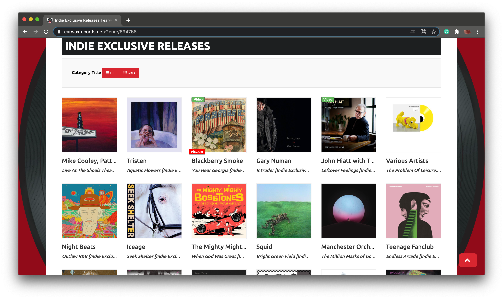
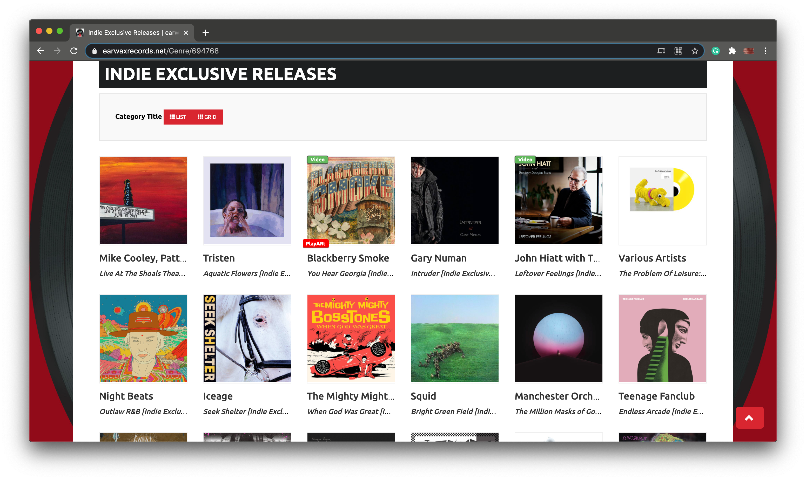

Final project proposal
Introduction
Channel Muse
Tune into Channel Muse for a glimpse into the local music scene of San Luis Obispo. From underground college students to artists that have graced the stages of our nearby venues, we have that "one song" you recently heard—record, tape, CD, you name it. Stop by for a good time with good music.
Target audience
Channel Muse is for those who want to branch away from mainstream music and discover the music scene of their hometown of San Luis Obispo. As music has a universal target audience, there is particular focus on the everyday concert-goer or garage band artist, both usually in the younger demographic. This site caters towards the inner indie music snob in all of us.
This site will be just one way a user can support local businesses, while also supporting a local artist in need of engagement. By visting the Channel Muse site, a user can search through our music products, read about local artists, listen to music samples, and overall, get a better idea of what we have to offer to consumers, and the community.
Comparative analysis
Stranded Records
 Clinton Street Record and Stereo
clintonstreetrecordandstereo.com
 Earwax Records
 

Website content
Home
Tune in to the sounds of San Luis Obsipo with Channel Muse.
[Display of consumers browsing various music products. ]
Listen
Get a feel for the music we offer here at Channel Muse. From local college bands to big indie names that have graced our nearby venues, the music of this San Luis Obispo has a certain vibe that words cannot express. So give it a listen, you won't regret it.
[Local musician from San Luis Obispo.]
[Number of images arranged in a grid displaying various artists.]
Browse
Like what you hear? Get your hands on this music by browsing our curated selection of vinyl records, tapes, and CDs. Simply check the availability, call or visit us, and it's yours.
[Number of images arranged in a grid displaying available products.]
Support
We are all about support here at Channel Muse. We believe San Luis Obispo is one-of-a-kind, all thanks to the power of local businesses. You support us, we support you...in the music we play the locals we display. Just one way of keeping the tunes timeless in this town we call home.
[Founders of Channel Muse.]
Connect
[Store-front view of Channel Muse.]
You've come this far, so let's connect. For information regarding our products, artists, orders, or just to talk music, call:
(805)329-0262
Take it one step further and visit us in our downtown location on 978 Monterey Street. You won't regret it.
Follow Us
Instagram: @channelmuse
Spotify: @channelmuse
channelmuse@sanluisobispo.com